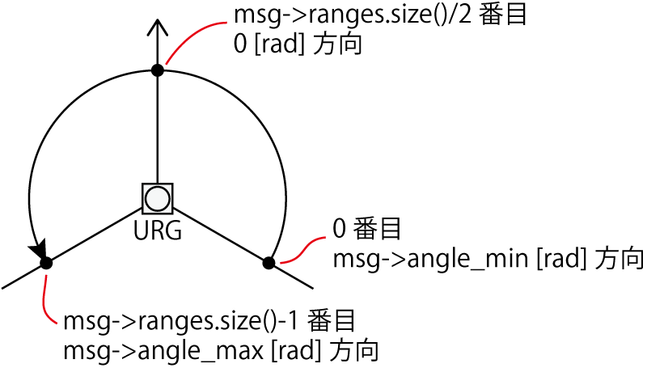

下記コマンドで、urg_nodeをインストールします。ROS公式リポジトリに含まれるため、apt-getでインストールが可能です。
$ sudo apt-get update
$ sudo apt-get install ros-indigo-urg-node
URGのデータを取得し、そのデータを用いてロボットの動作に反映する方法を習得します。
下記コマンドで、urg_nodeをインストールします。ROS公式リポジトリに含まれるため、apt-getでインストールが可能です。
$ sudo apt-get update
$ sudo apt-get install ros-indigo-urg-node
ソースコードの先頭部分で、スキャンデータのメッセージ型をincludeします。(赤線部分を追加)
(略) #include <geometry_msgs/Twist.h> #include <sensor_msgs/LaserScan.h>
rsj_robot_test_nodeで、sub_odom(サブスクライバクラス)を定義しているところに、URG用のサブスクライバクラスを追加します。
class rsj_robot_test_node
{
private:
(略)
ros::Subscriber sub_odom;
ros::Subscriber sub_scan;
rsj_robot_test_nodeのコンストラクタに、URG用のサブスクライバ初期化コードを追加します。
rsj_robot_test_node()
{
ros::NodeHandle nh("~");
pub_twist = nh.advertise<geometry_msgs::Twist>(
"/ypspur_ros/cmd_vel", 5);
sub_odom = nh.subscribe("/ypspur_ros/odom", 5,
&rsj_robot_test_node::cb_odom, this);
sub_scan = nh.subscribe("/scan", 5,
&rsj_robot_test_node::cb_scan, this);
更に、rsj_robot_test_nodeクラスに、URG用のコールバック関数を追加します。(cb_odomの後の位置など)
void cb_scan(const sensor_msgs::LaserScan::ConstPtr &msg)
{
int i = msg->ranges.size() / 2;
if(msg->ranges[i] < msg->range_min || // エラー値の場合
msg->ranges[i] > msg->range_max || // 測定範囲外の場合
std::isnan(msg->ranges[i])) // 無限遠の場合
{
ROS_INFO("front-range: measurement error");
}
else
{
ROS_INFO("front-range: %0.3f",
msg->ranges[msg->ranges.size() / 2]);
}
}
このコールバック関数中では、距離データ配列のうち、配列の中央の距離を表示しています。すなわち、URGの場合、正面方向の距離データ(m単位)が表示されます。また、msg->rangesの値がmsg->range_minより小さい場合は、測定エラー(遠すぎて測定できない、など)を意味しています。なお、msg->ranges[0]はmsg->angle_min方向(rad単位)、msg->ranges[msg->size()-1]はmsg->angle_max方向(rad単位)を表します。
まず、catkin_wsでcatkin_makeを実行して、追加したコードをビルドします。roscore、ypspur_ros、urg_node、rsj_robot_test_nodeを実行したいので、端末を4つ用意して、下記それぞれを実行します。
URGとロボットのUSBケーブルを接続しておきます。また、ロボットが走り出さないように、電池ボックスのスイッチをOFFにしておくとよいでしょう。
$ roscore
$ rosrun ypspur_ros ypspur_ros _param_file:=/home/ubuntu/params/rsj-seminar20??.param該当するものに置き換えること _port:=/dev/serial/by-id/usb-T-frog_project_T-frog_Driver-if00
$ rosrun urg_node urg_node _serial_port:=/dev/serial/by-id/usb-Hokuyo_Data_Flex_for_USB_URG-Series_USB_Driver-if00
$ rosrun rsj_robot_test rsj_robot_test_node Hello ROS World! vel: 0.0000 front-range: 1.234 vel: 0.0000 front-range: 1.234
URGの正面方向に手などをおいて、距離の値が変わるのを確認して下さい。
URGの真横方向の距離を表示してみましょう。